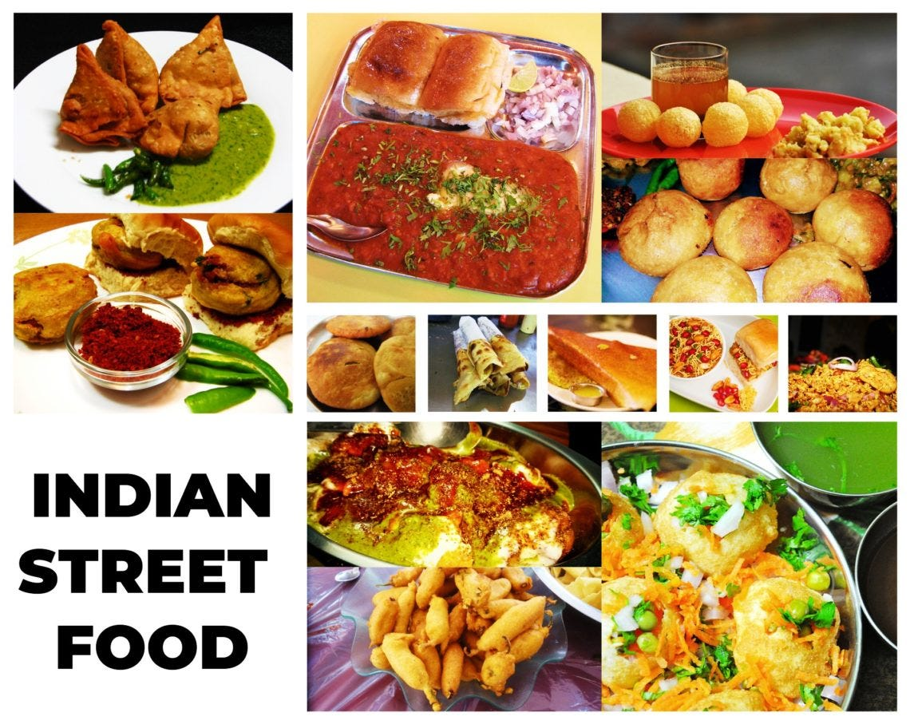

Remember, the kitchen is your canvas, and every dish you create is a masterpiece. Whether you're a seasoned chef or a novice cook, may you continue to experiment, explore, and find joy in the act of nourishing both body and soul through the art of cooking.
